Yoshino, Nara: things to do, food and stays
Yoshino · Nara
Yoshino
Highlighted on the Nara map.
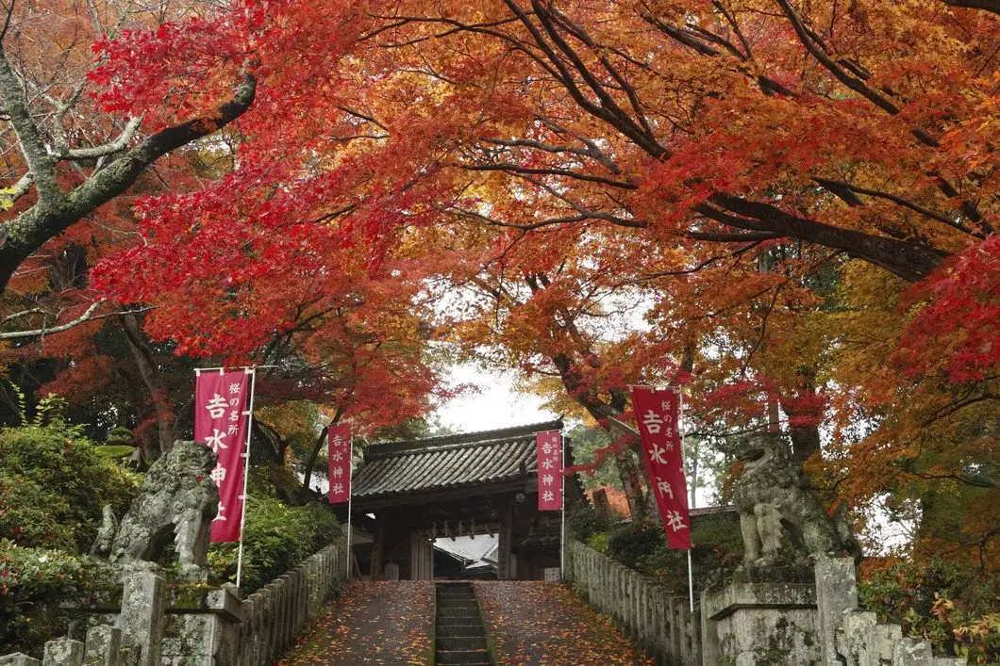
Stay
竹林院群芳園
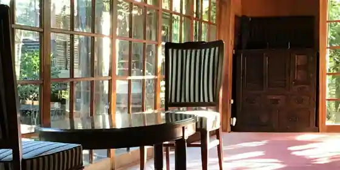
Chikurin Inn Gun Ho Sono
宿坊宝塔寺 蓮
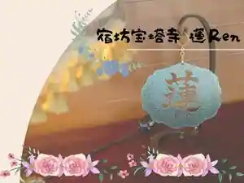
Shukubo Hoto Tera Hasu
吉野山の四季を展望 料理自慢の宿 吉野荘 湯川屋
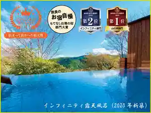
Yoshino Yama No Shiki Wo Tenbo Ryori Jiman No Yado Yoshino So Yukawa Ya
Inn in Yoshinoyama, Yoshino with open-air baths and kaiseki dinners.
吉野温泉元湯
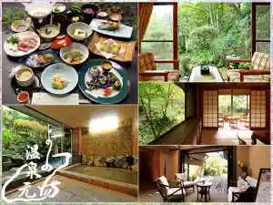
Yoshino Onsen Motoyu
Inn at Yoshino Onsen in Yoshinoyama, Yoshino.
ひとりでも“自分らしく”泊まれる宿 吉野館
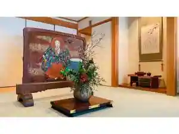
Hitoridemo Jibun Rashiku Toma Reru Yado Yoshino Kan
吉野の絶景を一人占め 景勝の宿 芳雲館
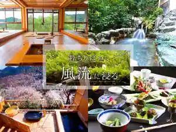
Yoshino No Zekkei Wo Hitorijime Keisho No Yado Hon Kan
Inn in Yoshinoyama, Yoshino with scenic views.
奈良県吉野山 太鼓判
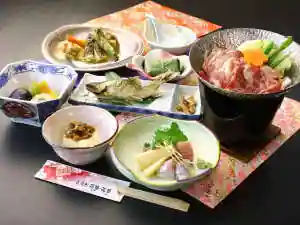
Naraken Yoshino Yama Taikoban
Inn in Yoshinoyama, Yoshino with scenic views.
太鼓判 花夢花夢
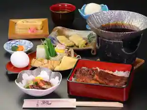
Taikoban Hanayume Hanayume
天然活魚と吉野川一望の展望風呂が自慢 元湯宮滝温泉まつや
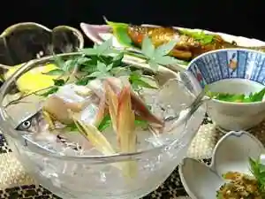
Tennen Ikeuo To Yoshinogawa Ichibo No Tenbo Furo Ga Jiman Motoyu Miyataki Onsen Matsuya
Inn at Motoyumiyataki Onsen in Miyataki, Yoshino with scenic views.
古都吉野 by SORASITA
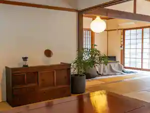
Koto Yoshino by SORASITA
Dining
柿の葉すし ひょうたろう
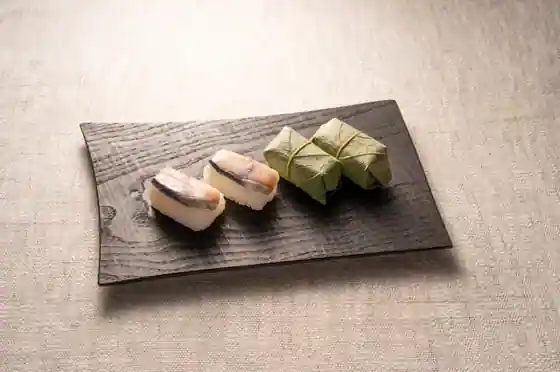
Kaki No Ha Sushi Hyotaro
枳殻屋
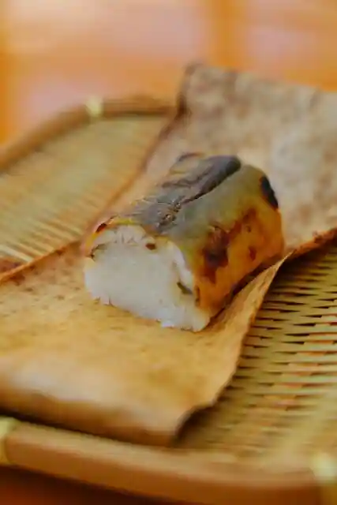
Karatachi Ya
中井春風堂
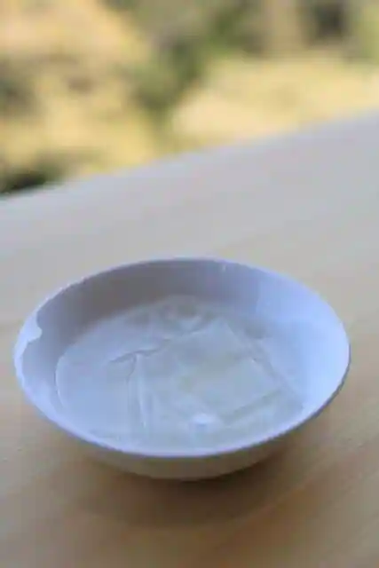
Nakai Harukaze Do
ラーメン河
Ramen Kawa
萬松堂
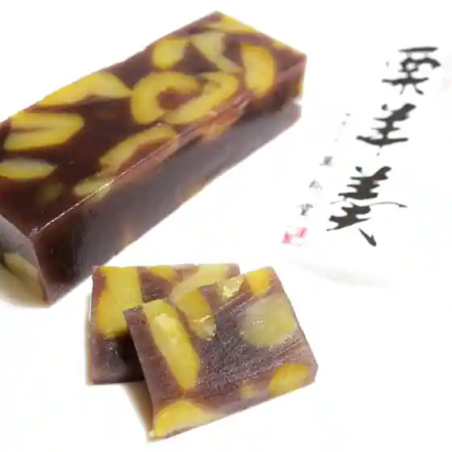
Bansho Do
吉野葛 八十吉
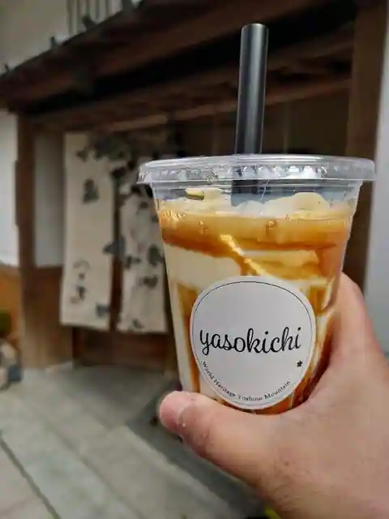
Yoshino Kuzu Yasokichi
馬酔木
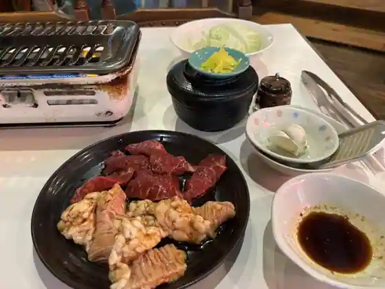
Ashibi
柿の葉寿司 やっこ
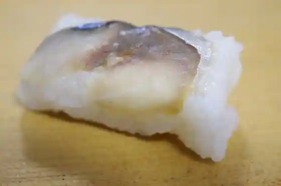
Kaki No Ha Sushi Yakko
豆富茶屋 林
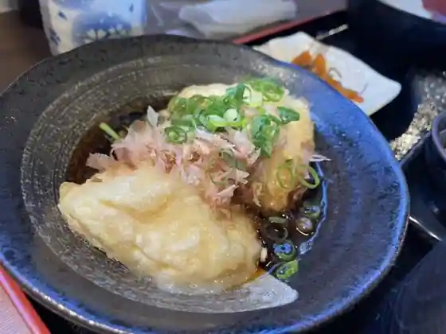
Tofu Chaya Hayashi
こばし餅店
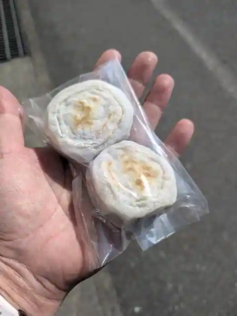
Kobashi Mochi
矢的庵
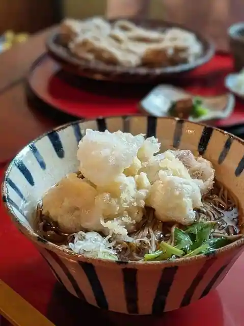
Ya Teki Iori
芳魂庵
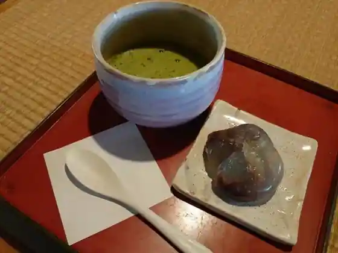
Ho Tamashi Iori
はるかぜ
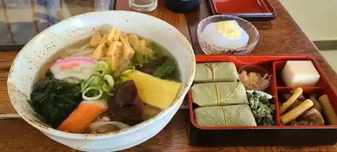
Harukaze
静亭
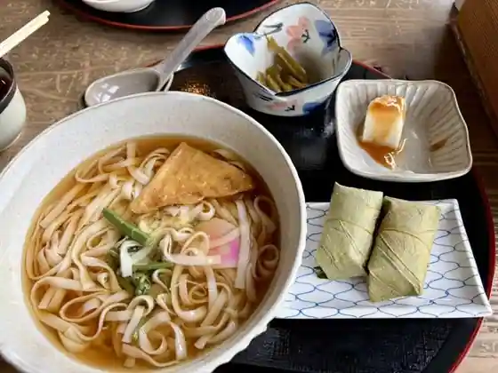
Sei Tei
近藤商店
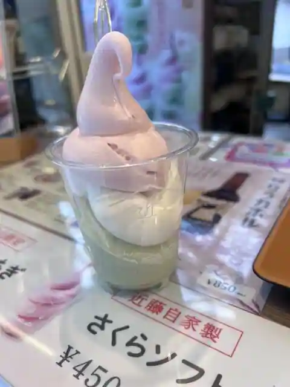
Kondo Sho
里
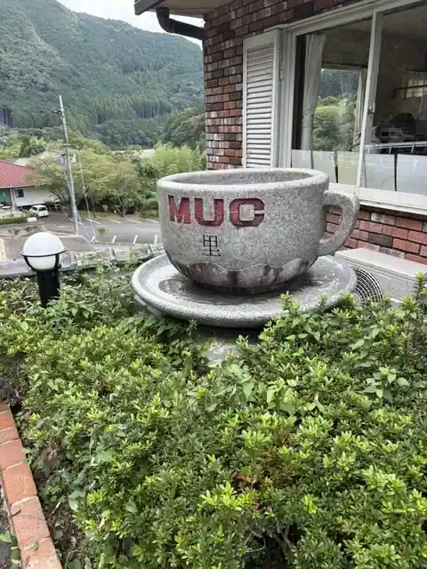
Sato
季節料理 初音
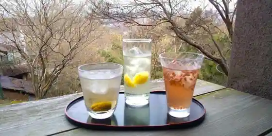
Kisetsu Ryori Hatsune
柿の葉ずし 醍予
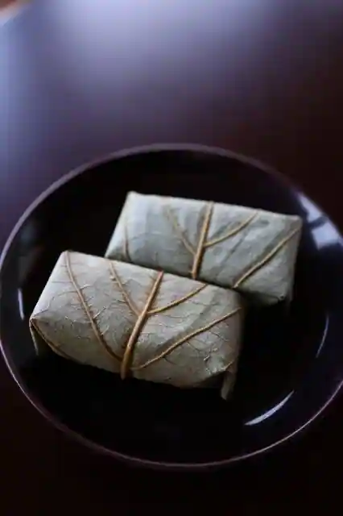
Kaki No Ha Zushi Dai Arakajime
くにす食堂
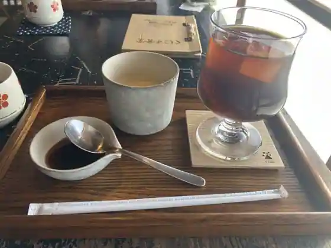
Kunisu Shokudo
西澤屋
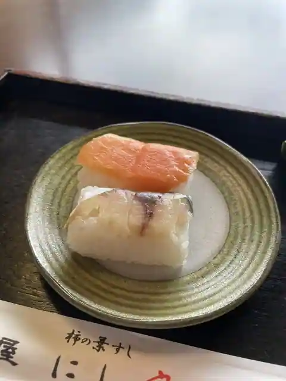
Nishizawa Ya
うぐいす
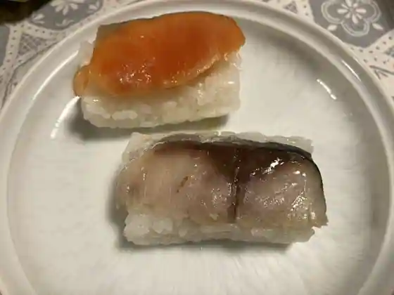
Uguisu
古民家レストラン ナラヤマソウ
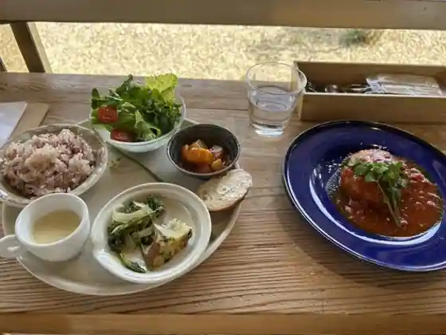
Ko Minka Restaurant Narayamasou
舟形家
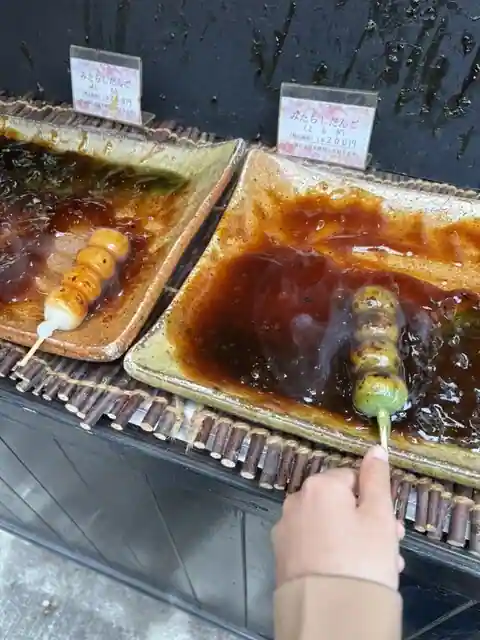
Funagata Ie
たつみ
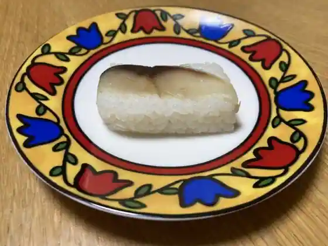
Tatsumi
Sights
𠮷 Mizu Shrine
Koyamaki Gunraku
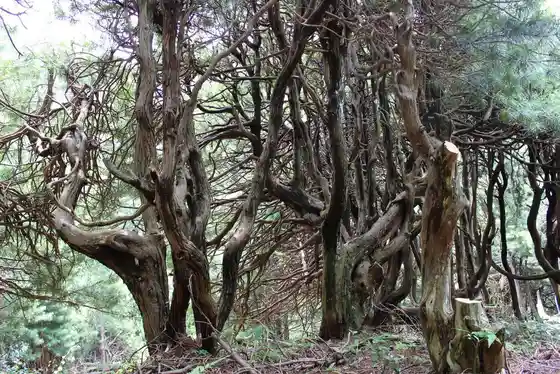
Ippan Shadanhojin Yoshino Bijitazubyuro
Ue City Ebisu Shrine
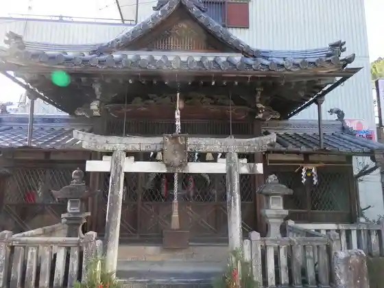
Rokkaku Hashira Dohyo
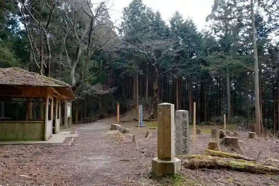
Katte Shrine
Yoshino Yama
Yoshino Kawa (Yoshino Ryuiki)
Yoshino Asa Kyuseki
Yoshino History Museum
Yoshino Suibun Shrine
Yoshino Shrine
Yoshino Noten Daijin
Yoshizo In
Dainichi Tera
Bridge (Yoshino)
Tenchi no Terasu Yushio FARM & EXPERIENCE
Tenmu Tenno Kahi
Ten'o Hashi
Nyoi Wa Tera
Imoyama Juso
Miyataki
Miyataki Iseki
Hiroshi Gan Tera
Toku Zen Tera
Murakami Yoshimitsu Haka
Tonan In
Kaki Museum
Sakuragi Shrine
Sakuramoto Bo
Tsu Furo Mizumi
Jo Mihara Shrine
Prefectural Yoshino Kawa Tsu Furo Nature Park
Ryu Zai Toge
Chikurin In
Kami Suki Village
Basho Kuhi (Shita Sembon Arashiyama)
Hana Yagura (Yoshino Yama)
Koke Shimizu
Ho no Shujaku Satsueichi Kinenhi
Saigyo Iori
Kana Nama Umebayashi
Mitake Tera
Mitake Tera Nio Mon
Mitake Tera Kuromon
Kinpo Shrine
Do Torii
Takagi Yama (Yoshino)
Ryumon Gaku